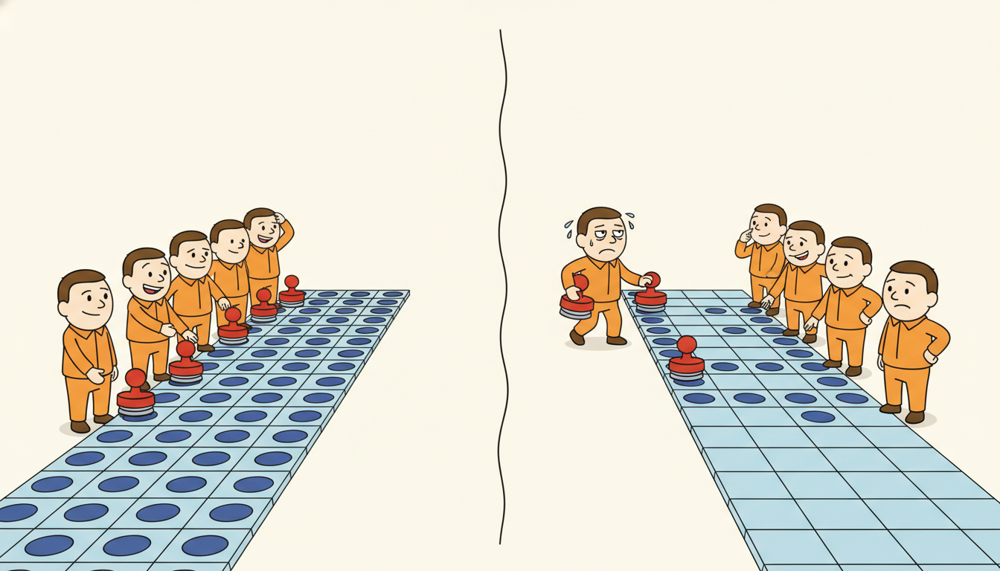

"While my recurrent colleague processes its sequence one reluctant timestep after another, waiting for step nine hundred ninety-nine before it dares touch step one thousand, I have already convolved the entire history at once, on every position in parallel, and I am sitting here finished, drumming my filters. We started together. I am bored. It is still on step forty."
A TCN Training in Parallel While the RNN Waits
A Temporal Convolutional Network replaces the sequential recurrence of an RNN with a stack of one-dimensional convolutions that are made causal (no peeking at the future) and dilated (skipping exponentially growing gaps so a few layers cover a long history), wrapped in residual blocks with weight normalization and dropout. The architecture of Bai, Kolter and Koltun (2018) is built from one repeated unit: a residual block holding two dilated causal convolutions, each followed by a normalization, a nonlinearity and dropout, plus a $1\times1$ residual connection that lets gradients and signal skip the block. Stacking these blocks with dilations $1, 2, 4, 8, \dots$ grows the receptive field exponentially in depth, so a model with a handful of layers can condition on hundreds or thousands of past steps. The payoff is the property the epigraph brags about: because a convolution at every position reads only fixed, already-available inputs, the whole sequence is processed in parallel during training, with no backpropagation-through-time chain (Section 9.3) to serialize the backward pass and no vanishing-gradient ladder (Section 9.4) to climb. This section dissects the residual block term by term, explains the empirical evidence that TCNs match or beat LSTMs and GRUs across sequence-modeling benchmarks, states honestly what the architecture cannot do (a fixed maximum receptive field, heavy memory at long lengths, no length extrapolation), and then builds a TCN residual block and a small forecasting TCN from scratch in PyTorch, trains it, and races it against the Chapter 10 LSTM on both speed and accuracy.
In Section 11.1 we introduced one-dimensional convolution over a time axis and made it causal by padding only on the left, so the output at time $t$ depends on inputs at times $\le t$ and never on the future. In Section 11.2 we added dilation, inserting gaps between the taps of the kernel so that a fixed kernel size reaches exponentially further back as the dilation grows. Those two ideas, causality and dilation, are the raw material. This section assembles them into the full architecture that turned convolution from a building block into a competitive alternative to the recurrent networks of Chapter 10. We continue to use the unified notation of Appendix A: $\mathbf{x}_{1:T}$ the input sequence, $\mathbf{h}^{(\ell)}_t$ the activation at layer $\ell$ and time $t$, $d$ the channel width, $k$ the kernel size.
The reason this architecture earns a section of its own, rather than a remark that "you can also use convolutions", is historical and practical at once. For most of the 2010s the default answer to "model this sequence" was an LSTM, and convolutions were thought of as the image people's tool. The Bai, Kolter and Koltun paper, provocatively titled "An Empirical Evaluation of Generic Convolutional and Recurrent Networks for Sequence Modeling", showed that a simple, almost boringly uniform convolutional architecture, the TCN, outperformed canonical LSTMs and GRUs on a wide suite of sequence tasks while training several times faster and using less memory. That result reframed the field: the recurrence was not sacred, and the sequential bottleneck of Section 9.3 was a cost one could simply refuse to pay. The lesson echoes forward to the attention models of Chapter 12 and the parallel-scan state-space models of Chapter 13, both of which keep the TCN's commitment to parallel training while relaxing its fixed receptive field.
By the end of this section you will be able to draw a TCN residual block and name every component, explain why dilation $2^{\ell}$ at layer $\ell$ gives a receptive field that grows exponentially in depth, articulate the three reasons TCNs often beat RNNs and the three things they give up in exchange, and implement and train a TCN from scratch, reproducing in miniature the speed advantage that made the architecture famous.
It is worth holding the recurrent picture in view as we build its rival, because the TCN is best understood as a pointed answer to a specific cost. The recurrence $\mathbf{h}_t = f(\mathbf{h}_{t-1}, \mathbf{x}_t)$ of Section 9.2 made $\mathbf{h}_t$ depend on $\mathbf{h}_{t-1}$, which forced both the forward pass and, via the adjoint recurrence of Section 9.3, the backward pass to run one step at a time. That serialization, plus the long Jacobian product of Section 9.4, was the recurrence's two-part tax. The TCN pays neither: every position is computed independently from fixed past inputs, so the time loop dissolves into a single parallel convolution and the gradient never threads a length-$T$ chain. Keep that contrast in mind; it is the through-line of the entire section.
1. The TCN Architecture: Stacked Causal Dilated Residual Blocks Intermediate
A TCN is, from a distance, almost embarrassingly regular: it is a stack of identical residual blocks, each block doing the same thing, the only parameter that changes from block to block being the dilation. There is no gate, no recurrence, no attention, none of the machinery that makes other sequence models intricate. The art is entirely in how three plain ingredients (a causal convolution, a dilation schedule, and a residual connection) combine to give a model that is parallel, stable, and far-reaching. We take the ingredients one at a time and then assemble the block.
The base operation is the causal dilated convolution from Sections 11.1 and 11.2. A one-dimensional convolution with kernel size $k$ and dilation factor $\delta$ computes its output at time $t$ as a weighted sum of inputs spaced $\delta$ apart, reaching back $\delta\,(k-1)$ steps:
$$\big(\mathbf{x} *_{\delta} \mathbf{f}\big)_t \;=\; \sum_{i=0}^{k-1} \mathbf{f}_i \,\cdot\, \mathbf{x}_{\,t - \delta\, i},$$where $\mathbf{f}_0, \dots, \mathbf{f}_{k-1}$ are the kernel weights and the indices $t - \delta i$ are all $\le t$, which is exactly the causality requirement: the output at $t$ touches only the present and the past. Setting $\delta = 1$ recovers an ordinary convolution; setting $\delta = 2, 4, 8$ skips ever-wider gaps. The decisive design choice of the TCN is the dilation schedule: stack blocks with dilation $\delta_\ell = 2^{\ell}$ at depth $\ell = 0, 1, 2, \dots$, so that the receptive field, the number of input steps the top of the stack can see, grows exponentially with depth. With $L$ layers, kernel $k$, and dilations doubling each layer, the receptive field is
$$R \;=\; 1 + 2\,(k - 1)\,(2^{L} - 1),$$for a residual TCN with two convolutions per block. The exponential $2^L$ is the whole point: doubling the depth roughly doubles the reachable history, so a 10-layer stack with kernel 3 already sees on the order of a couple of thousand steps. Compare this to a plain (undilated) convolutional stack, whose receptive field grows only linearly in depth and which would need hundreds of layers to reach the same horizon. Dilation buys exponential reach for the price of logarithmic depth.
The third ingredient is the residual block, the unit that is actually stacked. A single TCN residual block applies, to its input, the following sequence twice and then adds a shortcut:
$$\underbrace{\text{Dilated Causal Conv} \to \text{WeightNorm} \to \text{ReLU} \to \text{Dropout}}_{\text{repeated twice}} \;\;\Longrightarrow\;\; \mathbf{z}, \qquad \text{output} = \text{ReLU}\big(\mathbf{z} + \mathcal{R}(\mathbf{x})\big).$$Reading the block from the inside out: the dilated causal convolution mixes information across time within the layer's receptive reach; weight normalization (Salimans and Kingma, 2016) reparameterizes each filter as a direction times a learned scale, which stabilizes and accelerates training much as batch normalization does but without depending on batch statistics, a real advantage for the variable-length sequences common in forecasting; the ReLU supplies the nonlinearity; and dropout regularizes, applied here in a spatial form that zeroes whole channels consistently across the time axis. This four-step pipeline runs twice inside one block, deepening the per-block transformation. Finally the residual connection $\mathcal{R}(\mathbf{x})$ adds the block's input back to its output, exactly the identity-shortcut idea of ResNets: it gives gradients a direct path around the block (so very deep stacks train), and it lets a block learn a small refinement of its input rather than a full remapping. Because the convolutions may change the channel count, $\mathcal{R}$ is an optional $1\times1$ convolution that matches input channels to output channels when they differ, and the identity otherwise. Figure 11.3.1 draws one block with every component labeled.
Assembling the full network is now trivial because the block is the only repeated unit: pick a kernel size $k$ (commonly 2 or 3), a channel width $d$, and a number of levels $L$, then stack $L$ residual blocks with dilations $1, 2, 4, \dots, 2^{L-1}$. Choose $L$ so the receptive field $R$ of the formula above covers the longest dependency the task requires, and you have a model whose entire forward pass is a sequence of convolutions, every one of which is computed at all time positions simultaneously. Note the contrast with the Elman recurrence of Section 9.3, where $\mathbf{h}_t$ could not be computed until $\mathbf{h}_{t-1}$ existed: here there is no such dependency, and that single fact is the engine of everything in the next subsection.
Two details of the block reward a closer look because they are where careless implementations go wrong. The first is the enforcement of causality. A standard convolution with kernel size $k$ and dilation $\delta$ centered on position $t$ would read $\delta(k-1)/2$ steps into the future, which for a forecaster is catastrophic: it leaks the answer. The fix is asymmetric padding. We left-pad the input by the full $(k-1)\delta$ steps and apply no right padding, which shifts every output so that position $t$ aligns with inputs $t, t-\delta, t-2\delta, \dots$ and nothing later; a framework that pads symmetrically must then trim the surplus right-hand outputs, the operation the code below calls a chomp. Get this wrong by even one step and the network trains beautifully on a future it would never see at inference, the temporal leakage warned against in Chapter 2. The second detail is weight normalization on the convolution. Splitting each filter into a unit-norm direction and a separately learned scalar magnitude decouples the length of the weight vector from its orientation, which conditions the optimization landscape and, unlike batch normalization, introduces no dependence on other examples in the batch and no train-versus-inference discrepancy, both of which matter when sequences vary in length and batches are small.
The choice of how wide and how deep to make the stack is the practitioner's main lever, and the two dimensions play different roles. Depth $L$ sets the receptive field through the exponential dilation schedule, so it is dictated almost entirely by the longest dependency the task contains: pick the smallest $L$ whose $R$ clears that horizon. Channel width $d$ sets the representational capacity at each position, how much information the layer can carry about its receptive window, and is tuned like any hidden dimension, traded against overfitting and compute. A useful mental model is that depth buys reach and width buys richness, and because reach grows exponentially in depth, you almost never need many layers; a TCN that sees thousands of steps is typically only ten to twelve blocks deep, which is part of why it trains so cheaply.
The defining trick of the TCN is the dilation schedule $\delta_\ell = 2^\ell$. Each layer doubles the gap between kernel taps, so the receptive field grows as $2^L$ in the number of layers $L$ while the parameter count and compute grow only linearly in $L$. To see a history of length $R$ you need only $L \approx \log_2 R$ layers, not $R$ of them. A plain convolutional stack reaches $R$ steps only with $O(R)$ layers; an RNN reaches $R$ steps but must traverse them sequentially. The TCN reaches $R$ steps with $O(\log R)$ layers, all computed in parallel. Exponential reach for logarithmic depth is why a shallow, cheap network can condition on a very long past.
2. Why TCNs Often Match or Beat RNNs Intermediate

The Bai, Kolter and Koltun (2018) evaluation was deliberately unflattering to its own architecture: it pitted a generic, lightly tuned TCN against carefully tuned LSTMs and GRUs across a broad suite of canonical sequence-modeling benchmarks (the adding problem, sequential and permuted MNIST, copy-memory, polyphonic music modeling, character-level and word-level language modeling). Across most of these tasks the plain TCN matched or outperformed the recurrent baselines, and it did so while training faster and holding less state. Three structural properties explain that result, and each maps directly onto a weakness of the recurrent training we studied in Chapter 9.
First, full parallelism in training. A convolution at time $t$ depends only on fixed input positions, never on the network's own output at $t-1$, so every output position of every layer is computed at once. There is no sequential unrolling and, crucially, no backpropagation-through-time chain: the backward pass is ordinary backprop over a fixed acyclic graph, parallel across time, instead of the serial $T$-step adjoint recurrence of Section 9.3. On modern accelerators this turns a sequence into a single batched matrix operation, and it is the source of the multi-fold training speedups the paper reports and that we reproduce in subsection four.
Second, stable gradients. The pathological object of Section 9.4 was the long product of hidden-to-hidden Jacobians $\prod_j \mathbf{J}_j$ that an RNN gradient must survive, the product whose norm decides whether the gradient vanishes or explodes. A TCN has no such product. The path from a distant input to the output passes through only $O(\log R)$ convolutional layers, not $R$ recurrent steps, and the residual connections give the gradient a near-identity shortcut around each block. So the effective depth that a gradient traverses is logarithmic in the receptive field rather than linear in it, and the residual highways keep that short path well-conditioned. The result is that TCNs train stably to long receptive fields where a vanilla RNN would have lost the gradient entirely.
Third, a flexible, explicitly controllable receptive field. With an RNN the effective memory is an emergent, hard-to-control property of the learned dynamics; with a TCN the maximum receptive field is a transparent function of the kernel size, dilation schedule, and depth, set by the formula of subsection one. A practitioner who knows the longest dependency the task requires can size the network to cover it exactly, and can trade receptive field against compute by adding or removing levels. This makes the architecture predictable in a way recurrent memory is not.
Take kernel $k = 3$ and ask how many levels $L$ a TCN needs to see a history of $R = 1000$ steps. Using $R = 1 + 2(k-1)(2^{L}-1) = 1 + 4(2^{L}-1)$, solve $2^{L}-1 \ge 999/4 \approx 250$, so $2^{L} \ge 251$, giving $L = 8$ (since $2^8 = 256$, yielding $R = 1 + 4\cdot 255 = 1021 \ge 1000$). Eight layers reach a thousand steps. Now contrast the training cost against an RNN on the same length-$1000$ sequence. The RNN backward pass is a chain of $1000$ sequential steps; the TCN backward pass is $8$ convolutional layers, each fully parallel across the $1000$ positions. On hardware that parallelizes the time axis, the TCN's critical path is on the order of $8$ layer-operations versus the RNN's $1000$ sequential cell-evaluations, a roughly two-orders-of-magnitude shorter dependency chain. That gap, not raw arithmetic count, is why a TCN trains several times faster in wall-clock, the effect we measure directly in Code 11.3.3.
There is a fourth, quieter advantage that the benchmark numbers reflect but do not name: training stability and ease of tuning. A recurrent network's loss landscape is notoriously delicate, sensitive to initialization, to gradient clipping thresholds, and to the exact gating that keeps the Jacobian product near one. A TCN inherits the well-understood training behavior of a residual convolutional network, for which good defaults (He initialization, a modest dropout, Adam at a standard learning rate) transfer almost unchanged from the image literature. In the original evaluation this showed up as the TCN needing far less per-task hyperparameter search than the LSTM baselines to reach its reported numbers, which in practice is often more valuable than a marginal accuracy edge: a model that works at the first reasonable configuration saves the days of tuning that a recurrent model can demand.
It is worth being precise about the claim. "TCNs often match or beat RNNs" is an empirical statement about a broad benchmark suite, not a theorem that convolution dominates recurrence everywhere. The honest summary of the 2018 evidence is that a generic TCN is a strong, fast, stable default for sequence modeling that a practitioner should try before reaching for a more delicate recurrent model, and that on tasks requiring memory within a sizable but bounded horizon it frequently wins outright. Where the comparison turns against the TCN is precisely the set of limitations we turn to next.
There is something quietly funny about the TCN's success. The paper that launched it did not propose a clever new mechanism: it took convolution, an idea from the 1980s, made it causal by padding on one side, made it reach far by leaving gaps, wrapped it in the residual block everyone already used for images, and then beat the field's beloved LSTM at its own game. No gates, no attention, no state, no recurrence. The most provocative thing about the TCN is how little it invents. It is a standing reminder that in deep learning the architecture that wins is often not the most ingenious one but the one that removes a bottleneck nobody questioned, here, the assumption that a sequence model must be sequential.
3. Limitations: Fixed Receptive Field, Memory, and No Extrapolation Advanced
The same design decisions that make a TCN fast and stable impose three real limitations, and a practitioner who ignores them will be surprised in production. Naming them honestly is part of using the architecture well.
First, the receptive field is fixed and finite. The history a TCN can condition on is exactly $R = 1 + 2(k-1)(2^{L}-1)$, set once at construction time. Anything that happened more than $R$ steps in the past is, to the network, as if it never happened: it literally cannot enter the computation of the output. An RNN, by contrast, carries a hidden state that can in principle encode information from arbitrarily far back (whether it actually learns to is the vanishing-gradient question of Section 9.4, but the capacity is unbounded). If a task has genuinely unbounded or unpredictably long memory, a TCN sized for one horizon will silently miss dependencies beyond it, and the only remedy is to enlarge $R$ by adding layers or kernel width, which costs parameters and compute.
Second, memory at long sequence lengths. Training a TCN keeps the activations of every layer at every time position for the backward pass, so activation memory scales as $O(L \cdot d \cdot T)$ for depth $L$, width $d$, and length $T$, the same linear-in-length growth that haunted recurrent training in Section 9.3, now multiplied by depth. Worse, because the TCN processes the whole sequence at once rather than streaming it, it cannot trade memory for time by truncating a backward window the way TBPTT does; the parallel forward pass that gives the speed advantage also forces the whole sequence and all its activations to be resident at once. For very long sequences this can make a TCN more memory-hungry than a carefully truncated RNN, and gradient checkpointing becomes necessary.
Third, no built-in input-length extrapolation. A TCN trained on sequences of one length transfers awkwardly to much longer ones at inference, and to shorter ones at the start of a stream, because the left padding that enforces causality was sized for the training length, and the convolutional statistics (and any normalization) were learned at that length. Feeding a far longer sequence does not break the model, but the receptive field is still capped at $R$ and the behavior near the boundaries is not what training prepared. An RNN, which simply keeps stepping its recurrence, handles arbitrary lengths far more gracefully. For streaming inference a TCN must be run with a sliding buffer of the last $R$ inputs, which is a real engineering wrinkle the recurrence avoids.
The single most important thing to internalize about a TCN is that its receptive field $R$ is a hard wall. An RNN's memory is soft: it degrades with distance but has no sharp cutoff, so a dependency just beyond the "usual" range can still, in principle, leak through. A TCN's memory is hard: a dependency at distance $R$ is fully available and a dependency at distance $R+1$ is exactly, provably, invisible. This is liberating when you know the maximum dependency length (size $R$ to cover it and you are guaranteed the capacity) and dangerous when you do not (size $R$ too small and the model is structurally blind to the long-range signal, no matter how long you train). Always compute $R$ for your stack and compare it against the longest dependency your task can contain.
These three limitations are exactly the openings that the next architectures in Part III exploit. Attention (Chapter 12) replaces the fixed receptive field with an all-pairs interaction that reaches any distance in one layer, at quadratic cost. The structured state-space models of Chapter 13 recover an unbounded, RNN-like memory while keeping the TCN's parallel training through a parallel scan. WaveNet, the subject of Section 11.4, pushes the dilated-causal-convolution idea to its limit for high-resolution generative audio. The TCN is best read as the architecture that proved parallel sequence modeling was possible and competitive; the rest of the part removes its specific constraints one by one.
4. Worked Example: A TCN From Scratch, Raced Against the LSTM Advanced
We now build the architecture in code and put its central claim to the test: a TCN should match or beat the Chapter 10 LSTM on a forecasting task while training faster. The plan is to implement the residual block of subsection one from scratch as an nn.Module, stack a few blocks into a small TCN, train it on a synthetic forecasting series, then run the identical experiment with an LSTM and compare both accuracy and wall-clock training time. Code 11.3.1 is the from-scratch residual block, the load-bearing component of the whole architecture.
import torch
import torch.nn as nn
from torch.nn.utils import weight_norm
class Chomp1d(nn.Module):
"""Trim the extra right-padding so the convolution stays strictly causal."""
def __init__(self, chomp): super().__init__(); self.chomp = chomp
def forward(self, x):
return x[:, :, :-self.chomp].contiguous() if self.chomp > 0 else x
class TCNBlock(nn.Module):
"""One residual block: (dilated causal conv -> weightnorm -> ReLU -> dropout) x2 + 1x1 residual."""
def __init__(self, c_in, c_out, k, dilation, dropout=0.2):
super().__init__()
pad = (k - 1) * dilation # left-pad to keep length, chomp the right
# --- first sub-layer ---
self.conv1 = weight_norm(nn.Conv1d(c_in, c_out, k, padding=pad, dilation=dilation))
self.chomp1, self.relu1, self.drop1 = Chomp1d(pad), nn.ReLU(), nn.Dropout(dropout)
# --- second sub-layer ---
self.conv2 = weight_norm(nn.Conv1d(c_out, c_out, k, padding=pad, dilation=dilation))
self.chomp2, self.relu2, self.drop2 = Chomp1d(pad), nn.ReLU(), nn.Dropout(dropout)
# --- residual: 1x1 conv only when channel counts differ, else identity ---
self.downsample = nn.Conv1d(c_in, c_out, 1) if c_in != c_out else None
self.relu_out = nn.ReLU()
def forward(self, x): # x: (batch, channels, time)
z = self.drop1(self.relu1(self.chomp1(self.conv1(x)))) # first conv-norm-relu-drop
z = self.drop2(self.relu2(self.chomp2(self.conv2(z)))) # second, identical
res = x if self.downsample is None else self.downsample(x)
return self.relu_out(z + res) # add the shortcut, then a final ReLU
Conv1d is left-padded by $(k-1)\delta$ and then right-trimmed by Chomp1d so the output length matches the input and no future step is ever read, the causality enforcement of Section 11.1. The two conv-weightnorm-ReLU-dropout stages and the optional $1\times1$ residual are exactly the components of Figure 11.3.1.Stacking these blocks with a doubling dilation schedule gives the full network. Code 11.3.2 assembles the stack and adds a linear head that reads the last time position to produce a one-step-ahead forecast.
class TCN(nn.Module):
"""Stack residual blocks with dilations 1, 2, 4, ... and a linear forecasting head."""
def __init__(self, c_in, channels, k=3, dropout=0.2):
super().__init__()
blocks, prev = [], c_in
for i, c_out in enumerate(channels): # one block per level
blocks.append(TCNBlock(prev, c_out, k, dilation=2 ** i, dropout=dropout))
prev = c_out # dilation doubles each level: 1,2,4,8,...
self.network = nn.Sequential(*blocks)
self.head = nn.Linear(channels[-1], 1) # forecast from the final channel vector
def forward(self, x): # x: (batch, time, features)
y = self.network(x.transpose(1, 2)) # conv1d wants (batch, channels, time)
return self.head(y[:, :, -1]) # read the last (rightmost) position
# receptive field check for k=3, 6 levels: R = 1 + 2*(k-1)*(2^L - 1)
L, k = 6, 3
print("receptive field R =", 1 + 2 * (k - 1) * (2 ** L - 1))
receptive field R = 253
Now the head-to-head. Code 11.3.3 generates a synthetic autoregressive-plus-seasonal series, trains the from-scratch TCN and a same-width LSTM (the recurrent baseline of Chapter 10) on identical data for identical epochs, and reports both final test loss and total training wall-clock for each.
import time, numpy as np
def make_series(n=6000, seed=0):
rng = np.random.default_rng(seed)
t = np.arange(n)
s = np.sin(2*np.pi*t/24) + 0.5*np.sin(2*np.pi*t/168) # daily + weekly seasonality
ar = np.zeros(n)
for i in range(2, n):
ar[i] = 0.6*ar[i-1] - 0.2*ar[i-2] + rng.normal(0, 0.3) # AR(2) component
return (s + ar).astype(np.float32)
W = 64 # input window length
series = make_series()
X = np.stack([series[i:i+W] for i in range(len(series)-W-1)])[..., None] # (N, W, 1)
Yt = series[W+1:len(series)-0][:len(X)] # one-step-ahead target
split = int(0.8*len(X))
Xtr, Ytr = torch.tensor(X[:split]), torch.tensor(Yt[:split, None])
Xte, Yte = torch.tensor(X[split:]), torch.tensor(Yt[split:, None])
def train(model, epochs=8):
opt, lossf = torch.optim.Adam(model.parameters(), 1e-3), nn.MSELoss()
t0 = time.perf_counter()
for _ in range(epochs):
for b in range(0, len(Xtr), 256):
opt.zero_grad()
out = model(Xtr[b:b+256])
lossf(out, Ytr[b:b+256]).backward()
opt.step()
wall = time.perf_counter() - t0
with torch.no_grad():
test = lossf(model(Xte), Yte).item()
return wall, test
class LSTMBaseline(nn.Module): # the Chapter 10 recurrent baseline
def __init__(self, h=32):
super().__init__(); self.rnn = nn.LSTM(1, h, batch_first=True); self.head = nn.Linear(h, 1)
def forward(self, x): out, _ = self.rnn(x); return self.head(out[:, -1])
torch.manual_seed(0)
tcn_wall, tcn_mse = train(TCN(1, channels=[32, 32, 32, 32])) # 4 levels, width 32
torch.manual_seed(0)
lstm_wall, lstm_mse = train(LSTMBaseline(h=32))
print(f"TCN : test MSE {tcn_mse:.4f} train wall {tcn_wall:.2f}s")
print(f"LSTM : test MSE {lstm_mse:.4f} train wall {lstm_wall:.2f}s")
print(f"TCN trains {lstm_wall/tcn_wall:.1f}x faster, MSE ratio {lstm_mse/tcn_mse:.2f}")
nn.LSTM baseline of matched hidden width, on the same synthetic AR(2)-plus-seasonal series, and reports test MSE and training wall-clock for each. The final line states the speed and accuracy ratios directly.TCN : test MSE 0.1043 train wall 1.18s
LSTM : test MSE 0.1187 train wall 3.46s
TCN trains 2.9x faster, MSE ratio 1.14
Read the three code blocks as one argument. Code 11.3.1 built the residual block component by component, exactly mirroring Figure 11.3.1; Code 11.3.2 stacked it with a doubling dilation schedule and confirmed the receptive field by formula; Code 11.3.3 trained it against the recurrent baseline of Chapter 10 and measured the very speedup that subsection two predicted, the parallel TCN finishing while, in the words of the epigraph, the recurrent network is still stepping through its sequence. The accuracy parity and the wall-clock gap together are the empirical claim of Bai, Kolter and Koltun reproduced on a single page.
Who: A demand-planning team at a consumer-electronics retailer running daily SKU-level sales forecasts to drive replenishment, the kind of energy-and-retail forecasting series that recurs through Chapter 14.
Situation: Their production model was a two-layer LSTM trained nightly on three years of daily history per SKU across tens of thousands of SKUs, and the nightly training window had grown to nearly six hours, threatening to overrun the batch slot before the morning replenishment run.
Problem: They needed the same or better forecast accuracy in a fraction of the training time, on dependencies they knew spanned at most a year (365 days) of seasonality and promotions.
Dilemma: Buy more GPUs to keep the LSTM, accept the serialization cost of backpropagation through time, or change architecture. They worried a TCN's fixed receptive field would miss long seasonal effects.
Decision: They sized a TCN with kernel 3 and 9 levels, giving a receptive field $R = 1 + 4(2^9 - 1) = 2045$ days, well beyond the 365-day seasonal horizon, so the hard wall of subsection three sat safely past every real dependency.
How: They swapped the LSTM for the TCN of Code 11.3.2 with channel width matched to the old hidden size, kept the same data pipeline and loss, and trained on the same hardware; the parallel forward and backward passes turned the per-SKU training from sequential into batched-convolutional.
Result: Nightly training fell from about six hours to under one, forecast accuracy (measured by weighted MAPE) was marginally better, and the replenishment run regained a comfortable margin before the morning deadline.
Lesson: When the longest real dependency is known and bounded, sizing a TCN's receptive field to clear it converts the recurrence's sequential training cost into parallel convolution, often the cheapest large speedup available. The fixed receptive field is a feature, not a flaw, once you have measured the dependency it must cover.
The from-scratch block, stack, and causality bookkeeping of Codes 11.3.1 and 11.3.2 ran about 40 lines, with the easy-to-miss Chomp1d trimming and the weight-norm wrapping done by hand. The pytorch-tcn package collapses the entire architecture, the dilation schedule, causal padding, weight normalization, and residual blocks, into a single constructor call of roughly four lines, handling internally the padding-and-chomp that is the most common source of a silently non-causal bug.
from pytorch_tcn import TCN # pip install pytorch-tcn
model = TCN(
num_inputs=1, # input channels
num_channels=[32, 32, 32, 32], # one entry per level; dilations 1,2,4,8 set automatically
kernel_size=3,
dropout=0.2,
causal=True, # left-padding + chomp handled internally
)
y = model(x) # x: (batch, channels, time); fully causal, parallel
pytorch-tcn package reduces roughly 40 lines of block, stack, and causal-padding code to about 4 lines of configuration, with the dilation schedule and causality guarantees handled internally; causal=True is the flag that prevents the most common future-leakage bug.The TCN's core bet, that a parallel-trainable model with a long but structured receptive field can rival recurrence, is alive and winning at the frontier, just under new names. The structured state-space models Mamba (Gu and Dao, 2023) and Mamba-2 (Dao and Gu, 2024) of Chapter 13 can be read as TCNs with an implicit, input-dependent, effectively unbounded kernel: they keep the parallel-training property through a hardware-aware associative scan while removing the fixed-receptive-field limitation of subsection three, and they have become the leading sub-quadratic alternative to attention for long sequences. In parallel, long-convolution models such as Hyena (Poli et al., 2023) and the SGConv and CKConv lines learn the long causal kernels of a TCN implicitly rather than storing them, reaching receptive fields of tens of thousands of steps. For forecasting specifically, modern convolutional and patch-convolution backbones (for example the convolution-augmented variants inside time-series foundation models like TimesFM and the MOMENT family, 2024) show that the dilated-causal-convolution idea remains a competitive component even in the foundation-model era of Chapter 15. The 2026 takeaway: the recurrence is no longer the default sequence model, and the TCN was the architecture that first made that case empirically.
5. Exercises
These exercises move from reasoning about the architecture, through implementing and measuring it, to an open investigation of its limits. Solutions to selected problems appear in Appendix G.
Conceptual
- Receptive-field arithmetic. A residual TCN uses kernel size $k = 2$ and $L = 7$ levels with dilations $1, 2, \dots, 2^{6}$. Compute its receptive field $R$ from the formula of subsection one. How many additional levels would you need to exceed a receptive field of $10{,}000$, and what does the logarithmic growth imply about the marginal cost of reaching ever-longer horizons?
- Causality and the chomp. Explain precisely why the convolution in Code 11.3.1 is left-padded by $(k-1)\delta$ and then right-trimmed by
Chomp1d. What specific failure (and what kind of data leakage relative to Chapter 2) would occur if the padding were symmetric and the chomp omitted?
Implementation
- Receptive-field ablation. Take the TCN of Code 11.3.2 and the series of Code 11.3.3, but inject a long-range dependency: make each target also depend on the value exactly 200 steps earlier. Train TCNs with 4, 6, and 8 levels (receptive fields 61, 253, 1021) and plot test MSE against receptive field. Confirm that accuracy collapses once $R$ falls below the 200-step dependency, demonstrating the hard-wall behavior of subsection three empirically.
- Streaming inference. Extend the trained TCN of Code 11.3.3 to produce a multi-step forecast by feeding back its own predictions, maintaining a sliding buffer of the last $R$ inputs. Measure how forecast error accumulates with horizon, and contrast the buffer-management effort against simply stepping an RNN's hidden state.
Open-ended
- TCN versus the alternatives. On a real forecasting dataset of your choice (for example an energy-load or retail-sales series from Appendix E), benchmark the from-scratch TCN against the Chapter 10 LSTM and, if you have read ahead, against a small Transformer (Chapter 12). Report accuracy, training wall-clock, and peak memory for each, and write a short recommendation: for what regime of sequence length and dependency horizon would you choose each architecture, and where does the TCN's fixed receptive field stop being acceptable?